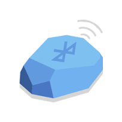

<ion-header>

  <ion-navbar>
    <button ion-button menuToggle>
      <ion-icon name="menu"></ion-icon>
    </button>

    <ion-title>Beacons</ion-title>

  </ion-navbar>

</ion-header>

<ion-fab bottom right *ngIf="isMobileDevice">
  <button ion-fab color="secondary" (click)="addNewBeacon()"><ion-icon name="add"></ion-icon></button>
</ion-fab>

<ion-content>

  <ion-searchbar padding *ngIf="isMobileDevice" (ionInput)="filterBeacons($event)"></ion-searchbar>

  <ion-list padding *ngIf="isMobileDevice">

    <ion-item *ngFor="let beacon of filteredBeacons" no-lines (click)="openDetails(beacon)">

      <ion-thumbnail item-left>
        
      </ion-thumbnail>

      <h2>{{beacon.name}}</h2>
      <p>Guid: {{beacon.guid}}</p>
      <p>Description: {{beacon.description}}</p>

    </ion-item>

  </ion-list>

  <ion-grid *ngIf="!isMobileDevice">
    <ion-row>

      <ion-col col-12 col-sm-9 col-md-6 col-lg-4 col-xl-3 (click)="addNewBeacon()">

        <ion-card>

          

          <ion-card-content>

            <ion-card-title>
              Add Beacon
            </ion-card-title>

          </ion-card-content>

        </ion-card>

      </ion-col>

      <ion-col col-12 col-sm-9 col-md-6 col-lg-4 col-xl-3 *ngFor="let beacon of filteredBeacons" (click)="openDetails(beacon)">

        <ion-card>
          
          <ion-card-content>

            <ion-card-title>
              {{beacon.name}}
            </ion-card-title>

          </ion-card-content>
        </ion-card>

      </ion-col>
    </ion-row>
  </ion-grid>

</ion-content>

<ion-footer *ngIf="!isMobileDevice">

  <ion-toolbar>
    <ion-searchbar (ionInput)="filterBeacons($event)"></ion-searchbar>
  </ion-toolbar>

</ion-footer>